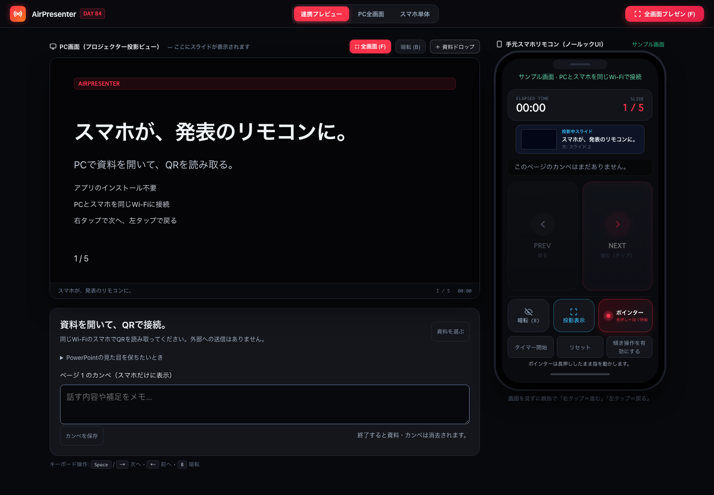

DAY 084 100 macOS ローカル版
スマホが、
発表のリモコンに。
Macで開いた資料を、手元のスマホで操作。
PCを離れて、聴衆を見ながら話せます。
ZIP・ソース一式。Macへの環境設定が必要です。
PCとスマホの連携画面

発表を、手元から。
操作も、原稿も、時間も。
- 大きなボタンで、ページ送り。
- 送り・戻り、暗転、長押しポインター。スマホの画面から操作できます。
- カンペとタイマーを、手元に。
- Macで保存したページごとの原稿と、共通の経過時間をスマホに表示します。
- 資料の変換は、発表するMacで。
- 資料を外部サービスへ送信しません。差し替え中は進行状況を確認できます。
始める前に
Macとスマホを、同じWi-Fiへ。
このページはローカル版の配布ページです。ZIPを入手してMacでサーバーを起動すると、スマホを接続できます。
- 動作確認した環境
- macOS、Node.js 22以上
- セットアップ
- Homebrew、Poppler、qrencode、Fontconfig、LibreOffice、PlaywrightのChromium
- 接続
- 同じWi-Fiに接続したMacとスマホ。端末間通信を禁止しているWi-Fiでは接続できません。
GET STARTED
使い始めるまでの3ステップ。
Macのターミナルで設定します。
Node.jsとHomebrewを先に用意してください。
ZIPを展開する。
「Mac用ローカル版を入手」から保存し、ZIPを展開します。中の
airpresenterフォルダでターミナルを開いてください。必要なツールを入れる。
次のコマンドを順番に実行します。パッケージと描画用ブラウザのダウンロードが行われます。
brew install poppler qrencode fontconfig brew install --cask libreoffice npm ci npx playwright install chromiumMacで起動して、スマホでQRを読む。
npm startMacのブラウザで
http://localhost:3084/?mode=dualを開き、資料を選びます。同じWi-Fiのスマホで、その画面のQRを読み取ってください。QRには操作権限が含まれます。接続する人だけに見せてください。終了はターミナルで Ctrl＋C。再起動後は新しいQRから接続します。
資料について
PDF・PowerPointに対応。
PDF・PPTX・PPTを選べます。1ファイル25 MiB、100ページまで。PowerPointは変換結果の全ページを元の資料と見比べてから採用できます。
PowerPointとは描画エンジンが異なるため、完全一致は保証できません。見た目を優先する場合は、元のPowerPointで「エクスポート」または「名前を付けて保存」からPDFを書き出し、そのPDFを選んでください。
アニメーション・動画は静止画になります。資料・カンペ・変換データは、サーバーを通常終了すると消去されます。
ソースと詳しい使い方